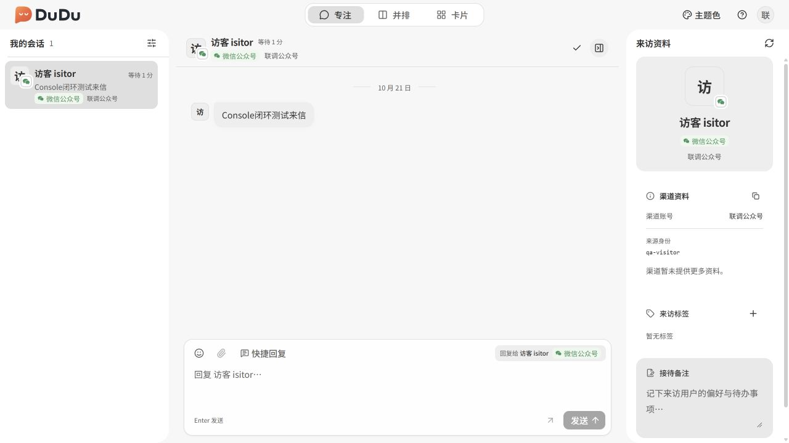

Unified inbox
Read channel conversations and history, receive real-time messages, send text replies and maintain shared tags and internal notes.
Self-hosted multichannel customer support with a unified inbox, organization console, platform administration and local callback testing. Apache-2.0 licensed.

Read channel conversations and history, receive real-time messages, send text replies and maintain shared tags and internal notes.
Isolate organizations and assign employees and channel accounts through groups. Conversation access follows current authorization.
Host the server and clients yourself, extend the channel adapter structure and validate callbacks locally with MockPulse.
The Java server provides authentication, authorization, persistence, channel adapters and HTTP / WebSocket APIs. Each application serves a distinct role.
Focus, parallel and card layouts, with browser access and Tauri desktop builds. Documentation ↗

Manage employees, groups and channel accounts. Secret credentials are write-only. Documentation ↗

Provision organizations, manage their resources and review operational summaries and activity logs. Documentation ↗


A local desktop tool for developers to construct events, signed and encrypted callbacks, organize scenarios and plans, and inspect run results. It is optional when running the support system.
MockPulse documentation ↗Adapters cover specific messaging products on these platforms. Authorization, events and sending capabilities vary by channel.
Outbound workspace messages currently support text only. Incoming non-text content depends on the channel. Production integration requires platform approval, authorization and public endpoint verification. The project is under active development; there are no release packages or hosted demos yet.
Read channel configuration and limitations ↗Java 21, Maven 3.9, Docker Compose, Node.js 22.12+ and Yarn 4.
Read guide ↗Start MySQL and Server; migrations initialize the database. Replace development credentials and the JWT secret before public deployment.
Read guide ↗Provision an organization in Admin, configure groups and channels in Console, then handle conversations in Desk.
Read guide ↗DuDu is licensed under Apache License 2.0, allowing commercial use, modification and distribution subject to its terms. Contributions through issues, code and documentation are welcome.